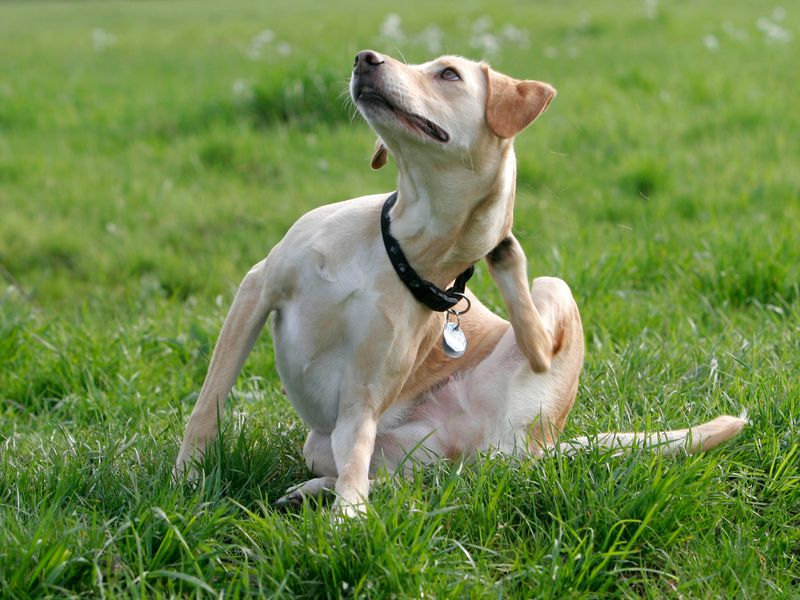

Blog
Últimas noticias

You’re not the only one who suffers from dry skin in the winter. When the heat comes on more frequently in the house, your pet may also become itchy...
How To Keep Your Dogs Joints Healthy
Author A.
Normal wear and tear on joints occurs daily. Cartilage protects your dog’s bones and joints from the friction caused by everyday movement. Natural glucosamine—a building block of cartilage tissue—can help maintain cartilage for healthy joints and mobility.
What is cartilage?
Cartilage is a tissue found at the ends of bones in the joint areas that acts as a cushion. It is composed of a sponge-like mass of cells, together with proteins, special substances that hold water and the water itself. Glucosamine serves as a building block to create these special water-holding substances.
Why is cartilage important?
Healthy cartilage is absolutely essential for proper joint function and overall mobility. Happy, healthy, active dogs need healthy cartilage and a diet that supports overall well-being, including joint health.
Where does glucosamine come from?
Glucosamine occurs naturally in several common dog food ingredients. Purina uses several poultry and meat sources and guarantees the level of glucosamine in several of their adult dog formulas. Glucosamine is also produced in the body itself.
Does natural glucosamine benefit senior dogs only?
No, wear and tear on cartilage occurs over a lifetime, so glucosamine helps maintain healthy joints in your dog throughout their life.
How does the body maintain healthy cartilage?
Chondrocytes are cells present in the cartilage of joints. These cells use glucosamine and other compounds supplied by the diet or produced within the body to make and maintain proteins and the water-binding substances in the cartilage. This allows the cartilage to function as a shock absorber.
What role does glucosamine play in joint health?
As a building block of cartilage, glucosamine can help support joint health and mobility.
What can you do to help keep your dog’s joints healthy?
There are three simple ways to help support healthy joints:
- Glucosamine
Feed your dog a diet which contains guaranteed levels of natural glucosamine, a building block of cartilage.
- Weight management
Keep your dog at a healthy weight; overweight dogs can develop joint problems and a dog’s bones, joints, muscles and associated tendons and ligaments all work together to give him smooth and efficient movement Maintaining the proper weight is very important for helping maintain good joint health
- Exercise
Proper exercise is important to keep muscles toned and joints flexible Consult your veterinarian about your dog’s exercise requirements